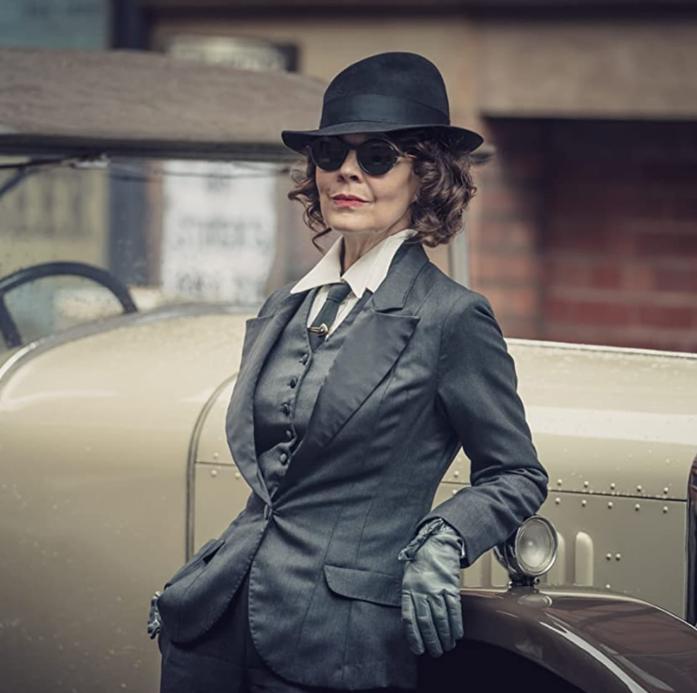

Polly Gray

Elizabeth Pollyanna "Polly" Gray (née Shelby) is one of the two former tritagonists (alongside John Shelby) of Peaky Blinders. She is the mother of Michael and Anna Gray, aunt of Arthur, Thomas, John, Ada and Finn Shelby, as well as being the matriarch of the Shelby and Gray families. She is part of the Birmingham criminal gang, the Peaky Blinders, a certified accountant and company treasurer of Shelby Company Limited.
When the Shelby brothers were absent during WWI, Polly managed the Peaky Blinders business. Since her nephews came back, she has been an important figure in the Shelby family dealing with family feuds and advising on the company's actions and policies.